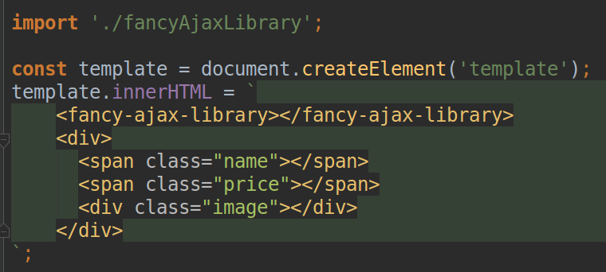
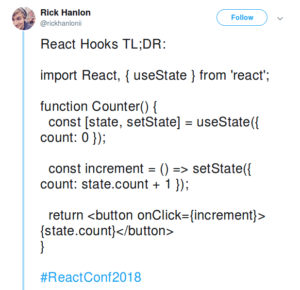

Baker on Github
https://github.com/ing-bank/baker


I just heard that ING hates ... and does ....
I just heard that @JordyMoos hates ... and does ....
Adding a bit of static type checking to a world of Web Components


Web Components
- Web platform APIs
- Component-based engineering
- Encapsulation and Reusability
Web platform APIs
- Custom Elements
- Shadow DOM
- HTML Template
- HTML Imports
Web Components
It is a Web standard
Lets see how Web Components work
Attributes are a good way to gain data
You also might want to inform other about your knowledge
Libraries

Elm
- Usability
- Performance
- Robustness
Elm
Elm
- Pure Functional language
- Statically Typed
Elm
- Pure Functional language
- Statically Typed
- Strongly Typed
"No runtime errors"
Sorry No elm quiz!

ELM Live Demo
Adding a bit of static type checking to a world of Web Components
Combine the two
TODO: IMAGE OF ALL COMPONENTS
Conclusion
- Web Components is something that last
Learn about Web Components
- https://www.webcomponents.org/introduction
- https://github.com/thepassle/webcomponents-from-zero-to-hero
Learn about ELM
- guide.elm-lang.org
- Play with the ELM repl